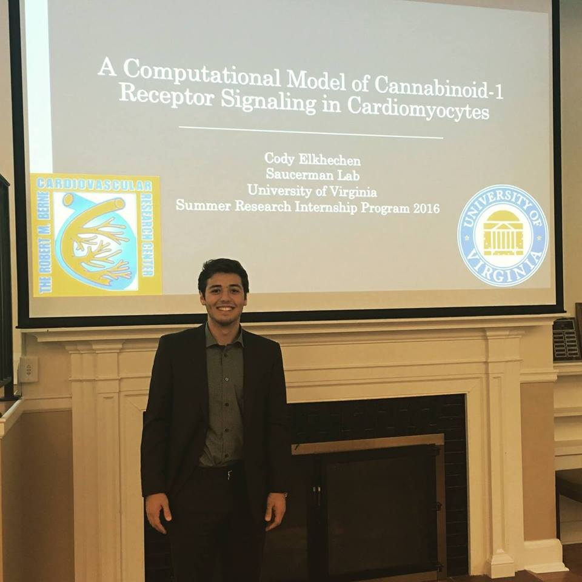

Cody Elkhechen
Biomedical Sciences/Pre-Medicine, Class of 2017
Cody
"I was Able to Discover a New Realm of Research"
"Of the 6 million people that are diagnosed with heart failure about half of them die within five years so “why is that?”. Well as you grow older your heart cells lose the capacity to regenerate and if there is damage to any tissue — a heart attack or just aging in general — that part of the heart is forever scarred and you lose function. Your heart never returns to its full effective state.
This summer I worked in Dr. Jeffrey Saucerman’s lab at the University at Virginia. It was an SRIP (Summer Research Internship Program). I worked in a biomedical engineering lab and when I first heard that I thought, “oh no I am not an engineer. I know nothing about differential equations, coding, I am just not familiar.” A lot of the lab is super computational — that was also one thing I learned a lot of — which was cool because it was kind of an uncharted area for me. I was able to discover a new realm of research. Along with the research, every Friday we would have practice sessions where we practice sharing our information with the general public. Ultimately they’re providing money for research through taxes and they want to know what the hell you’re doing! At the end with the mentor, we do a ‘goodbye meeting’ and one of the questions that she asked was if this program influenced me. I’ve done research, but I had never really gotten my own project; I was just helping out with the lab. This was cool because I had my own project and they hold you accountable for getting your stuff done; so I had a meeting with my PI every Tuesday.
You can easily search online any school — insert school and put summer research program. Most of the applications are due by the end of January, maybe February 15th. I think I applied to nine schools and Virginia was one of my “reach” schools. I think they’re ranked in the top 20 for med schools. I was like yeah I’ll apply to UVA. I didn’t get into 8 schools; I only got into this school. This program took 20 kids out of over 550 kids. None of them were like “oh I’m definitely getting in here”, but I figured some schools were easier than others and that wasn’t the case. I literally only got into one school — which was this school — and it’s funny because this was my ‘reach’ school."
contact us at ubemerge@gmail.com